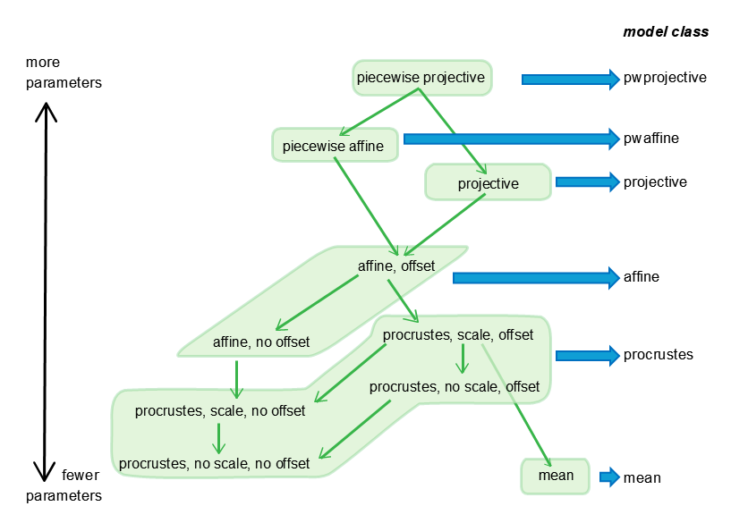

Data structures
Dataset structure
A dataset structure is a container for representational spaces to be analyzed in parallel -- for example, determining a consensus between them via rs_knit_coordsets, visualizing them via rs_disp_coordsets, or transforming them via rs_xform_apply.
It consists of three components:
- a
stimulus metadata structure('sas'), and - a
set metadata structure('sets') - a
coordinate structure('ds'),
each of which is a MATLAB cell array with the same number of records. A single record contains the coordinates and metadata for a representational space models of one or more dimensions, all derived from a common dataset.
Typically a dataset structure is created by reading one or more coordinate files via rs_get_coordsets, a single coordinate file via rs_read_coorddata, or imported from coordinate arrays with user-supplied metadata via rs_import_coordsets.
Stimulus metadata structure
This contains the metadata that defines the stimulus set, and, optionally, data related to the analysis of 'choice files'. For each record, 'sas{irec}' has the following fields:
- nstims: number of stimuli
- typenames: a 1-D cell array of stimulus labels. Entries correspond to 'stim_labels' in the
coordinate fileis used to create thedataset structure. This field is used to identify unique stimuli when merging datasets and records; matching is case-sensitive. The allowed characters are a-z, A-Z ,0-9, and '-'. - type_coords: a 2-D array of
stimulus coordinates, if the domain has a priori coordinates; typically empty if not. Seestimulus coordinatesfor further details. - the optional variables *LL* and metadata from a
coordinate file
Set metadata structure
This describe the source of the dataset. For each record, 'sets{irec}' has the following fields:
- dim_list: list of available dimensions in ds{irec}
- nstims: number of stimuli
- label_long: long file name, typically full file name and path
- label: shortened file name, suitable for display
- type: typically 'data'
- paradigm_type: typically the domain name, e.g, 'opposites' or 'transport' as examples of generic domains; demos also use 'btc' for the
binary texture domainand 'animals' for theanimal domain - paradigm_name: can be the same as paradigm_type or used to designate a subset or rendering within paradigm_type
- subj_ID: unique subject identifier
- subj_ID_short: short form of subject identifier, suitable for display
- pipeline: structure describing the processing stages leading to this record
For an example of a dataset structure with one record and without stimulus coordinates, run the demo rs_read_coorddata_demo_cars and look at 'data_out'.
For an example of a dataset structure with three records and with stimulus coordinates, run the demo rs_read_coorddata_demo_opposites and look at 'data_out'.
Coordinate structure
For each record, 'ds{irec}', is a cell array in which 'd{irec}{k}' contains the coordinates for the k-dimensional model, as contained in the coordinate file. d{irec}{k} may be empty ('[]') if no model is available.
Stimulus coordinates
Some domains may be structured by an a priori set of coordinates for the stimuli -- for example, colors can be given coordinates according to their R, G, and B components. Another example is the domain of adjectives, many of which come in opposite pairs. Specifying stimulus coordinates is optional, and for many domains -- for example, cars, or musical instruments -- it may not be appropriate. To use stimulus coordinates, specify them as a numerical array in the 'stimulus metadata structure`. The rows of the array correspond to the stimuli (in the order of 'sas{irec}.typenames'), and each column is a dimension.
- For generic domains, stimulus coordinates are in the
type_coordsfield of thestimulus metadata structure. They can be set directly or specified at the time of reading or importing via auxiliary inputs inrs_get_coordsets,rs_read_coorddata, orrs_import_coordsets. - For
binary textureandMPI facesdomains, these values are specified in thesetup metadataand are in thebtc_specoordsandbtc_augcoordsfields of thestimulus metadata structure, with priority given tobtc_augcoordsif both are specified. - In either case, stimulus coordinates are applied to each record of the 'dataset structure', so they need to need to be listed in each record of the
stimulus metadata structure, i.e., in 'sas{irec}.type_coords', or 'sas{irec}.btc_augcoords'.
Stimulus coordinates may be used to:
- To create a
ray structure, to enhance visualization of representational spaces viars_disp_enh_coordsets(demo: runrs_read_coorddata_demo_opposites, thenrs_disp_coordsets_demo_opposites) - To create
quadratic form modelsfor representational spaces viars_get_coordsets(demo: runrs_read_coorddata_demo_opposites, option 3)
Ray structure
When the stimulus domain is structured with stimulus coordinates, a ray structure identifies simple relationships among the stimuli:
- stimuli that lie on rays (points on approximate straight lines from the origin)
- stimuli that lie on rings (coplanar points at approximately equal distances from the origin)
- nearest neighbors
The ray structure is created by rs_findrays, and its auxiliary inputs may be used to set the minimum number of points needed to form a ray, the tolerances for collinearity, etc.
Quadratic form models
A quadratic form model is a model applicable to a domain with stimulus coordinates. For stimulus coordinates with N dimensions, the quadratic metric is a symmetric positive-definite N x N matrix Q (i.e., a quadratic form) with elements qi,j.
In the quadratic form model, the distance D between stimuli X (a row vector with N elements xi) and Y (a row vector with N elements yi) is given by D2=XQYT=\(\Sigma\)qi,j(xi-yi)(xj-yj)
To create representational spaces from a quadratic form model and a set of stimulus coordinates, use rs_get_coordsets with input_type=2 to generate a dataset structure. Q is then taken from a specified file which contains one or more such matrices stored as r{k}.results.qfit. An example file is in demos/opposites_qform_example.mat, and rs_read_coorddata_demo_opposites, option 3, demonstrates this process for the 'opposites' domain. Additional files that specify quadratic form models may be found in samples/bwtextures/btc_allraysfixedb_*.mat; these contain many additional fields that are not required.
This will generate a record in a dataset structure whose coordinate structure 'ds{irec}' has N components. The component ds{irec}{idim} (idim running from 1 to N) is an array of idim columns, whose kth row has the coordinates of stimulus k in the best idim-dimensional fit to the quadratic form model. These calculations are performed in psg_qformpred. Note that the coordinates are not unique; the model is unchanged by translation and orthogonal transformation.
For a dataset that used a quadratic form model the type field of the set metadata structure is set to qform.
Transformation structures
Transformation structures specify geometric transformations, including linear transformations and several generalizations.
Transformations can be applied to dataset structures by rs_xform_apply.
Transformations can be specified directly by the fields below, or can be constructed in several ways:
rs_xform_specify: Creates transformations that translate and rotate a dataset, using model class 'affine'.rs_knit_coordsets: Creates transformations that align one dataset with another, using model class 'affine'.rs_geofit: Finds transformations that fit the relationship between one dataset and another, using transformations of the model classes 'mean',procrustes,affine,projective, andpwaffine(fitting ofpwprojective(piecewise projective) transformations are not currently supported).
The diagram below shows the available geometric transformations. Note that some transformations are special cases of others, i.e., nested within a more general transformation. These relationships are indicated by the green arrows in the diagram. The more general transformation will always provide a fit that is at least as good as one that is nested in it, but at a cost of having more parameters. rs_geofit provides statistics for model comparison and selection between such pairs of nested models. See demos??

For transformations on a representational space of dimension k, a transformation structure has the following fields:
- b: a scalar multiplier
- T: a square array of size [k k] or (for 'pwaffine' and 'pwprojective', a stack of such arrays, see below)
- c: a vector of size [1 k] or (for 'pwaffine' and 'pwprojective', a stack of such vectors, see below)
-
additional arguments, depending on 'class'
- For class='projective' (a projective transformation): p is a vector of size [k 1]
- For class='pwaffine' (a piecewise affine transformation with ncuts cuts): c is [ncuts k], T is a 3D array of size [k k 2ncuts], acut is [ncuts 1], and vcut is [ncuts k]
- For class='pwprojective' (a piecewise projective transformation with ncuts cuts): the parameters in 'projective' and 'pwaffine', with p an array of size [k 2ncuts]
To allow for compatibility with transformations produced by procrustes (a MATLAB built-in), or procrustes_consensus, the following alternative names are allowed: b -> scaling, T -> orthog, c -> translation
The transformation applied to a row vector x produces a row vector y as follows:
- 'affine','procrustes','mean': These are linear transformations with an optional offset component, y=b*xT+c. (Note, for 'procrustes', abs(det(T)) should equal 1, and for 'mean', T should equal 0.)
- 'projective': This is a projective (or perspective) transformation. An array Taug of size [k+1 k+1] is formed with b*T in its upper left, p in its upper right, c in its lower left, and 1 in its lower right. xaug is created by adjoining a 1 to the right of x. Then yaug=xaug*Taug is computed, and y is the first k elements of yaug divided by its last. For p=0, this reduces to an affine transformation.
-
'pwaffine': This is a piecewise affine transformation. There are ncuts hyperplanes, each defined by their normal vectors given in vcut. To determine the component of the space that x lies in, s=sign(x*vcutT-acut) is computed. The affine transformation used ('ipw') is determined by the entries in s: s=[+1 +1 ... +1] corresponds to ipw=1, [-1 +1 ... +1] corresponds to ipw=2, [+1 -1 ... +1] corresponds to ipw=3,..., and [-1 -1 ... -1] corresponds to ipw=2ncuts. Then T(:,:,ipw) and c(ipw,:) are used to compute the transformation, as in 'affine' above. Notes:
- The same value of b is used for all components.
- For transformations created by
rs_geofit, the pieces of the transformation are continuous where they meet at their boundaries.
-
'pwprojective': The component is determined as in 'pwaffine', and the transformation is carried out as in 'projective', with p(:,ipw)
Note that the same transformation can be expressed in many ways -- for example, the scale factor b can be absorbed into T, and the cutplanes of a piecewise transformation can be permuted.